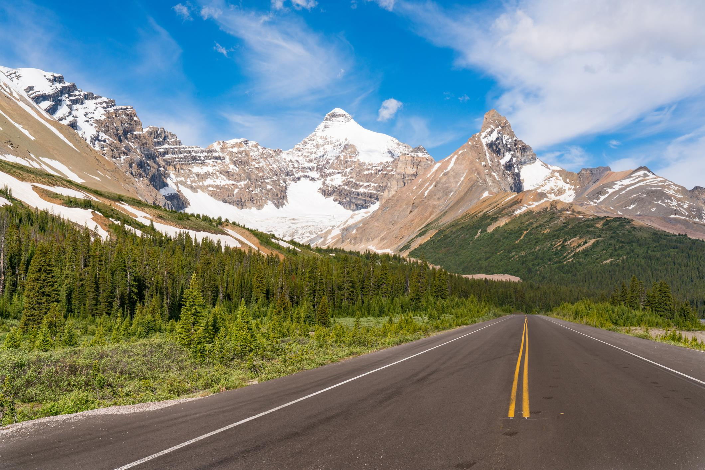

🚗 Highway 93 Scenic Stops
Day 4 오전 · Icefields Parkway
⭐ 드라이브 중 만나는 최고의 전망과 짧은 산책 포인트

📅 우리 일정
Day 4 오전
Canmore → Highway 93 → Weeping Wall 회차 → Yoho National Park
📍 오늘 만나는 Scenic Stops
- 🏔 Crowfoot Glacier Viewpoint
- 💎 Bow Lake
- 🦊 Peyto Lake
- 🌊 Waterfowl Lakes
- 💧 Weeping Wall
🗺 오늘의 이동 순서
- 🚗 Canmore 출발
- ① Crowfoot Glacier (약 5분)
- ② Bow Lake (약 20분)
- ③ Peyto Lake (약 30분)
- ④ Waterfowl Lakes (약 10분)
- ⑤ Weeping Wall (약 5분)
- ↩️ 회차 후 Yoho National Park 이동
🚶 Scenic Stop 정보
🏔 Crowfoot Glacier
🚶 약 5분
⭐⭐⭐
💎 Bow Lake
🚶 15~20분
⭐⭐⭐⭐⭐
🦊 Peyto Lake
🚶 20~30분
⭐⭐⭐⭐⭐
🌊 Waterfowl Lakes
🚶 10~15분
⭐⭐⭐⭐
📍 각 장소 특징
- 🏔 Crowfoot Glacier
차에서 내리면 바로 전망을 감상할 수 있는 빙하 전망대
- 💎 Bow Lake
호숫가까지 가까워 짧은 산책과 사진 촬영에 좋음
- 🦊 Peyto Lake
전망대까지 왕복 약 20~30분, Day 4 최고의 전망 포인트
- 🌊 Waterfowl Lakes
한적한 분위기에서 호수를 감상하며 잠시 쉬어가기 좋은 장소
💧 마지막 Scenic Stop
💧 Weeping Wall
🚶 약 5분
⭐⭐⭐
🎒 준비물
- 👟 편한 운동화
- 🧥 얇은 바람막이
- 💧 생수
- 📷 카메라
- 🕶 선글라스
- 🍫 간단한 간식
💡 여행 Tip
- ✔ 모든 정차 지점은 짧은 산책으로 충분히 둘러볼 수 있습니다.
- ✔ Bow Lake와 Peyto Lake는 사진 촬영 시간을 조금 여유 있게 잡는 것을 추천합니다.
- ✔ 날씨가 좋다면 Waterfowl Lakes도 꼭 들러보세요. 비교적 한적한 분위기의 숨은 명소입니다.
- ✔ Weeping Wall에서 회차한 후 Yoho National Park 일정으로 이동합니다.
- ✔ 이동 중에는 야생동물이 도로를 건널 수 있으므로 안전 운전에 유의하세요.
📍 Google Maps